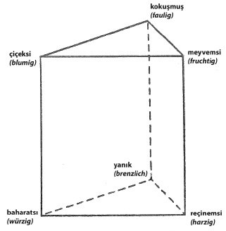

ŞEKİL 94. “Koku prizması”: Görsel bellek ile koku belleği arasında farklar bulunmakla birlikte, kokuları görsel uyarıların sınıflandırılmasına benzer biçimde sınıflandırma çabaları, koku alma araştırmalarında ağırlıklı yer tutmayı sürdürmüştür. Alman psikologu Hans Henning’in burada görülen ve 100 yıl kadar önce geliştirmiş olduğu koku prizmasına, okul kitaplarında hâlâ rastlanabilmektedir; oysa sınıflandırmaya göre belirlenen çiçeksi (“blumig”), çürüksü (“faulig”), meyvemsi (“fruchtig”), baharatsı (“würzig”), yanık (“brenzlig”) ve reçinemsi (“harzig”) boyutları, koku uyarıcıları için geçerli bir model sağlamamaktadır.186
Koku adlarının etkisini daha iyi anlayabilmek amacıyla Trygg Engen (1926-2009) tarafından yukarıdakilerle benzeşen 13 adet “kazı-kokla” kokusunun kullanıldığı, çoktan seçmeli bir test tasarlanmıştır. Engen’in Odour Sensation and Memory (Koku Duyusu ve Bellek) (1991) adlı eserinde yer aldığı üzere, bunda her koku için, madde kazınıp koklanmadan önce okunmak üzere dört ad seçeneği verilmişti.
Bunlardan biri doğru seçenek, diğer üçü ise çeldiricilerdi. Testin odağında yanlış seçenek yanıtlarının yapısı yer almaktaydı. Her biri ayrı bir denek grubu için kullanılan iki ayrı takım bulunmaktaydı. Standart bir koku deneyinden seçilmiş olan bir takım, hedef kokuya göre oldukça farklı şeyleri, öteki takım ise benzer nesneleri gösteriyordu (ÇİZELGE 13). Örneğin üzüm kokusu için çeşitli takım seçeneklerinden pizza, neftyağı ve karanfil kokusu yanlış seçenekler olarak yer alırken, sınıflandırılmış takımın yanlış seçenekleri kavun, erik ve çilekti. Bütün doğru adlar ve yanıt seçenekleri aşağıdaki çizelgede sunulmuştur. Sınıflandırılmış takımlardaki kokuların kolayca ayırt edilebilir olduklarına ve doğrudan karşılaştırmalarda hiç de birbirlerine karıştırılmalarının beklenmediğine dikkat etmek gerekir.186